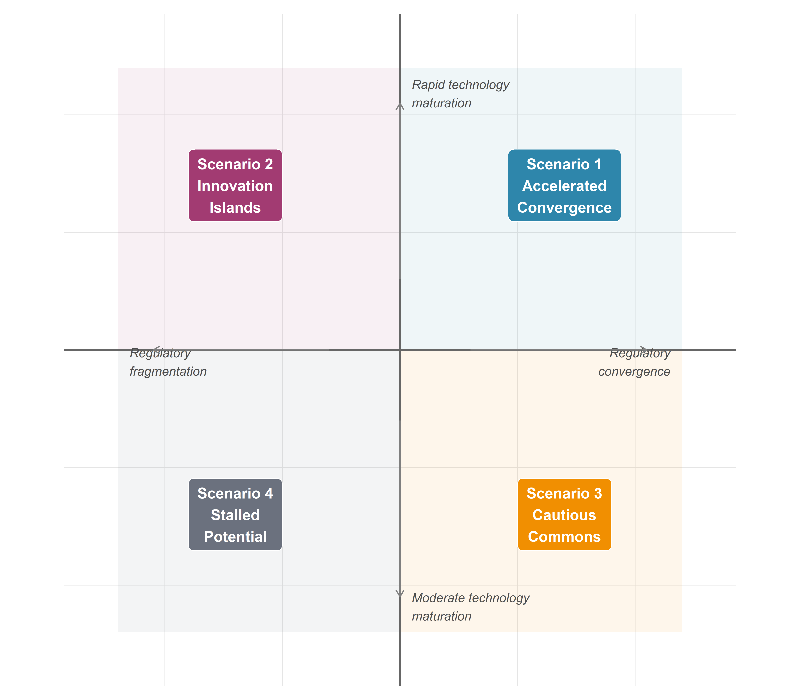
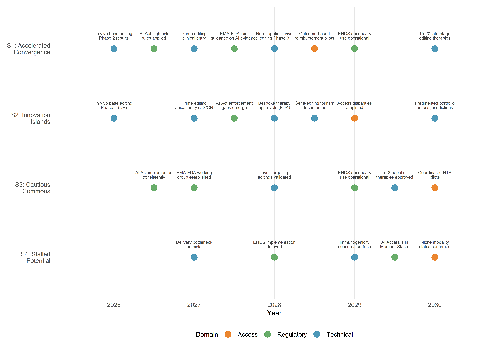
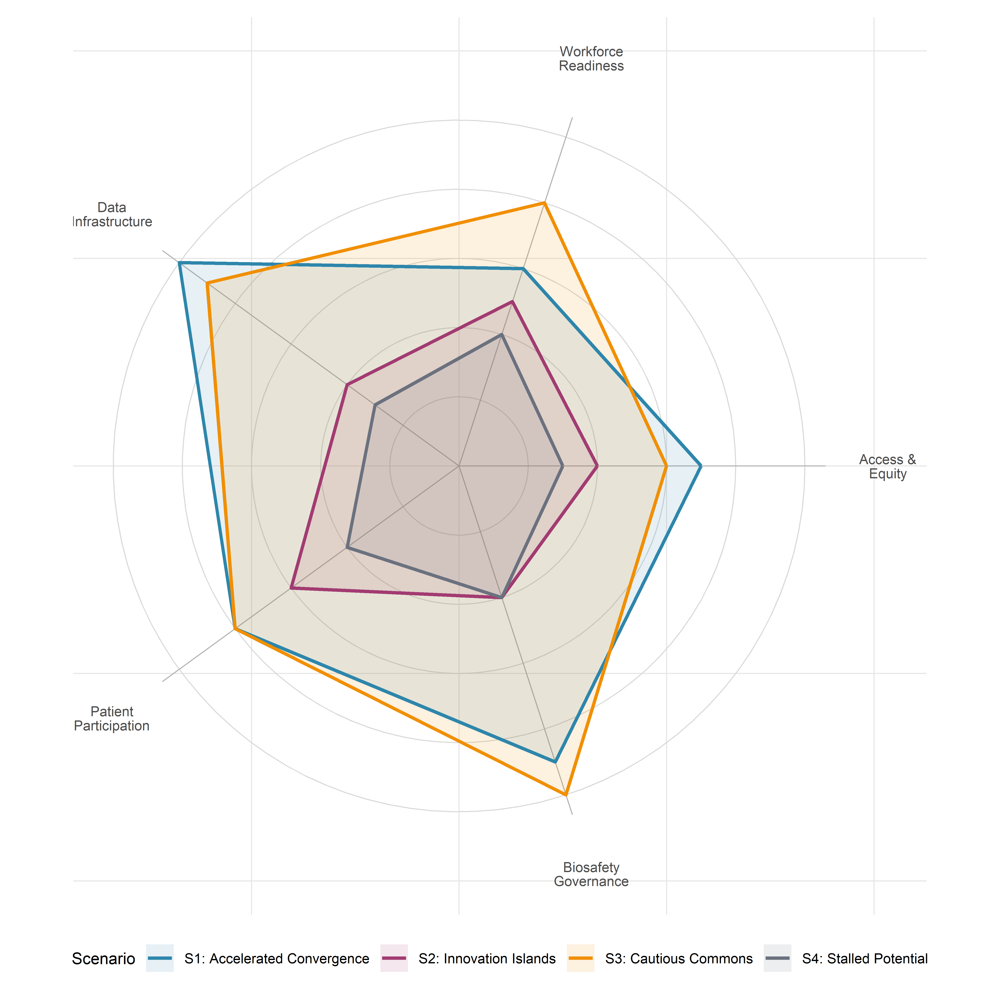

9 Prospective Scenarios 2026–2030
9.1 Introduction: structured anticipation, not prediction
In January 2024, a single CRISPR-based therapy—Casgevy, for two haemoglobinopathies—had just received its first regulatory approval. By early 2026, the clinical pipeline had expanded to over 250 registered gene-editing trials, base editors had achieved in vivo correction of disease-causing mutations for the first time, and the first personalised CRISPR therapy had been administered to an individual patient. What will the field look like in 2030? No honest answer to that question takes the form of a prediction. Prediction requires models whose parameters can be estimated with reasonable precision—a condition manifestly unmet in a domain shaped by contingent regulatory decisions, unpredictable scientific breakthroughs, and shifting geopolitical alignments. What can be offered instead is scenario analysis: a systematic exploration of plausible futures conditioned on identifiable drivers and uncertainties, designed not to forecast outcomes but to expand the deliberative imagination of researchers, regulators, clinicians, and publics (Heijden, 2005; Schwartz, 1991).
The intellectual warrant for scenario analysis in the governance of emerging technologies derives from two complementary traditions. The first is the scenario-planning methodology developed at Royal Dutch Shell in the 1970s and subsequently formalised by Schwartz, Ringland, and others as a structured approach to strategic decision-making under deep uncertainty (Ringland, 1998; Wilkinson & Kupers, 2014). The second is the concept of anticipatory governance elaborated by Guston and colleagues within the framework of responsible research and innovation (RRI), which treats prospective analysis as more than a planning tool: it becomes a mode of democratic engagement with the futures that emerging technologies make possible—and foreclose (Guston, 2014; Stilgoe et al., 2013). Both traditions share a commitment to epistemic humility: the recognition that the function of scenarios is not to reduce uncertainty but to render it legible, thereby enabling more reflexive and adaptive forms of governance.
The analysis that follows builds on the conceptual apparatus developed across Parts I–III—CRISPR as a platform technology and boundary object (§1.9), the critique of algorithmic authority in guide-RNA design (§2.9), the value-laden character of optimisation (§3.9), the sociotechnical construction of clinical evidence (§5.8), the regulatory patchwork analysed in Chapter 7, and the integrated STS–bioethical framework of Chapter 8. The scenarios are not free-floating speculations; they are analytical instruments grounded in the empirical and normative work that precedes them.
9.2 Methodology: scenario construction
9.2.1 Axes of uncertainty
Scenario-matrix approaches typically identify two to three principal axes of uncertainty—variables whose future values are both highly consequential and genuinely indeterminate—and use their intersection to generate a bounded set of contrasting futures (Ringland, 1998; Schwartz, 1991). For the CRISPR–AI convergence, two axes stand out as both analytically tractable and empirically grounded.
Axis I: Rate of technology maturation. This axis captures the pace at which CRISPR-based therapeutic platforms—including base editors, prime editors, epigenome editors, and AI-designed systems—advance from preclinical validation to clinical deployment. It encompasses not only editing efficiency and specificity but also the critical bottleneck of delivery: whether lipid nanoparticle (LNP), adeno-associated virus (AAV), or emerging non-viral vectors achieve the tissue tropism, redosing capacity, and manufacturing scalability required for broad therapeutic application (§§1.6, 4.5, 5.5). As of early 2026, the clinical landscape includes approximately 250 registered gene-editing trials, with over 150 actively enrolling, spanning haemoglobinopathies, oncology, cardiovascular disease, rare monogenic conditions, and—tentatively—autoimmune disorders (Ji et al., 2026). The question is whether this momentum accelerates into a broad clinical portfolio by 2030 or encounters diminishing returns from delivery limitations, immunogenicity barriers, and off-target toxicities.
Axis II: Degree of regulatory and governance coordination. This axis ranges from a scenario of increasing international harmonisation—convergent standards across the European Medicines Agency (EMA), the US Food and Drug Administration (FDA), and peer agencies; coordinated AI governance under the EU AI Act (Regulation 2024/1689) and analogous frameworks; operational cross-border data infrastructure through the European Health Data Space (EHDS, Regulation 2025/327)—to a scenario of deepening fragmentation, in which jurisdictions pursue divergent approaches to gene-therapy approval, AI oversight, and data sovereignty. The current regulatory landscape, analysed in Chapter 7, already exhibits both centralising and fragmenting tendencies: the AI Act’s phased implementation (prohibitions from February 2025, high-risk obligations from August 2026, full application by August 2027 for regulated products) coincides with the FDA’s novel ‘plausible mechanism’ pathway for bespoke gene therapies, which represents a fundamentally different regulatory philosophy from the EMA’s established conditional marketing-authorisation framework (European Parliament and Council of the European Union, 2024; Makary & Prasad, 2025).
9.2.2 The 2×2 matrix: construction and limitations
The intersection of these two axes generates four quadrants, each corresponding to a named scenario (Figure Figure 9.1):
| Regulatory convergence | Regulatory fragmentation | |
|---|---|---|
| Rapid technology maturation | Scenario 1: Accelerated Convergence | Scenario 2: Innovation Islands |
| Moderate technology maturation | Scenario 3: Cautious Commons | Scenario 4: Stalled Potential |
A methodological caveat is essential. The 2×2 matrix is a heuristic, not a model. It necessarily simplifies a multidimensional uncertainty space into two orthogonal variables, obscuring correlations between them (regulatory stringency may itself influence the rate of innovation, and vice versa) and omitting important additional dimensions—geopolitical dynamics, public opinion shifts, economic cycles. The scenarios are not predictions with assigned probabilities; they are internally consistent narratives designed to illuminate the space of possibility and to stress-test governance assumptions. As Wilkinson and Kupers emphasise, the value of scenarios lies not in their accuracy but in their capacity to challenge conventional expectations and reveal strategic blind spots (Wilkinson & Kupers, 2014).
9.3 Axis I: technology maturation trajectories
The rate at which CRISPR–AI therapeutic systems mature over 2026–2030 depends on the resolution of several interconnected technical challenges, each analysed in detail in earlier chapters. Here we synthesise the key variables that differentiate a rapid-maturation trajectory from a moderate-maturation one.
9.3.1 Editing architectures: which platforms will dominate?
The clinical portfolio as of early 2026 remains heavily dominated by Cas9-based nuclease strategies—principally ex vivo haematopoietic stem-cell editing, as exemplified by Casgevy (exagamglogene autotemcel), now approved across multiple jurisdictions for sickle cell disease (SCD) and transfusion-dependent β-thalassaemia (TDT) (Frangoul et al., 2021; Vertex Pharmaceuticals and CRISPR Therapeutics, 2023). However, the frontier of clinical translation has shifted decisively toward in vivo approaches. CRISPR Therapeutics’ LNP-delivered liver-targeting programmes—CTX310 (ANGPTL3, cardiovascular), CTX320/CTX321 (LPA, lipoprotein(a)), and the forthcoming CTX460 (SERPINA1, α-1-antitrypsin deficiency, utilising the SyNTase precision-editing platform)—are at the forefront of this transition, with multiple Phase 1 trials enrolling and new clinical initiations expected throughout 2026. Beam Therapeutics’ adenine base-editing programme for α-1-antitrypsin deficiency has demonstrated the first clinical correction of a disease-causing mutation in situ, achieving approximately 90% healthy-protein restoration in the highest-dose cohort—a landmark that distinguishes correction from disruption as a clinical modality (Beam Therapeutics, 2025).
The European Commission’s conditional approval of Casgevy—the first CRISPR/Cas9-edited therapy ever authorised—signals a decisive regulatory shift. By validating a nuclease-based product within standard medicinal-product pathways, EU regulators have effectively lowered the translational barrier for next-generation editors, including base and prime editing platforms. This precedent is poised to accelerate in vivo programmes and reshape competitive dynamics as correction-oriented architectures move closer to clinical mainstream.
In a rapid-maturation trajectory, base and prime editors achieve reproducible therapeutic correction across multiple organ systems beyond the liver by 2028–2029, enabled by advances in LNP tropism engineering and, possibly, by the emergence of novel non-viral delivery platforms (engineered virus-like particles, exosome-based vectors). AI-driven guide-RNA design (Chapter 2) and editing-outcome prediction (Chapter 3) contribute to shorter preclinical timelines and more predictable clinical dosing. In a moderate-maturation trajectory, liver-targeting in vivo editing matures into a reliable clinical modality, but extra-hepatic delivery remains a bottleneck: the lung, muscle, central nervous system, and haematopoietic compartment prove resistant to efficient non-viral access, confining the clinical portfolio to hepatic targets and ex vivo strategies.
9.3.2 AI models: from task-specific to integrative
The AI ecosystem in genome editing is undergoing a transformation from task-specific models—DeepCRISPR for on-target prediction, CRISPR-Net for off-target scoring, inDelphi for repair-outcome modelling (Chapters 2–3)—toward foundation models trained on large-scale biological sequence data. DNABERT and its successors, protein-language models (ESM-2, ProGen2), and multimodal architectures that jointly embed nucleic-acid sequence, protein structure, and chromatin context mark a qualitative shift in the computational infrastructure available for editing design (§§2.5, 3.5). The question is whether these models achieve sufficient validated accuracy for prospective clinical design by 2030, or whether the gap between in silico prediction and in vivo outcome—the ‘bench-to-bedside translation gap’ for AI—persists as a limiting factor.
A parallel development is the emergence of generative AI models capable of proposing de novo editing systems: novel Cas variants with engineered PAM specificities, optimised pegRNA scaffolds for prime editing, or synthetic guide architectures with enhanced specificity profiles (§3.5). If these generative approaches yield clinically deployable tools within the 2026–2030 timeframe, they would amount to a qualitative disruption—editing systems with no natural precedent, designed entirely through computational methods and validated through high-throughput functional screens.
9.3.3 Delivery systems: the critical bottleneck
As argued in §1.6 and §5.5, delivery remains the single most consequential variable for clinical translation. The LNP platform, validated by the COVID-19 mRNA vaccines and now entering CRISPR clinical trials, offers a proven manufacturing pathway and regulatory precedent. However, its natural hepatotropism limits the addressable disease space. AAV vectors provide broader tissue targeting but face immunogenicity, cargo-size constraints, and manufacturing scalability challenges. The resolution of the delivery bottleneck—or its persistence—is the strongest differentiator between rapid and moderate technology-maturation trajectories. The first personalised CRISPR therapy, administered to an infant with CPS1 deficiency in 2025, demonstrated that bespoke LNP-delivered liver editing is technically feasible on an individual-patient timescale, but scaling such approaches to population-level therapies for common diseases remains an unsolved engineering challenge (Musunuru et al., 2025).
9.4 Axis II: regulatory and governance trajectories
9.4.1 The convergence scenario: harmonised international frameworks
A convergent governance trajectory would see the progressive alignment of regulatory standards for gene therapies and AI-enabled medical technologies across major jurisdictions. In the European context, three regulatory instruments create the structural conditions for convergence: the EU AI Act, which classifies most healthcare AI applications as high-risk and imposes conformity-assessment, transparency, and human-oversight requirements with phased application through August 2027 (European Parliament and Council of the European Union, 2024; Sloot et al., 2024); the European Health Data Space (EHDS, Regulation 2025/327), which entered into force in March 2025 and will enable cross-border secondary use of electronic health data for research purposes by 2029 (European Parliament and Council of the European Union, 2025); and the evolving EMA framework for advanced-therapy medicinal products (ATMPs), which is being updated to address the specificities of genome-editing therapies. Internationally, convergence would entail deepening cooperation between the EMA, FDA, and peer agencies (MHRA, PMDA, TGA) on gene-therapy standards, mutual recognition of clinical-trial data, and harmonised approaches to AI validation in regulatory submissions.
The FDA’s February 2026 draft guidance on the ‘plausible mechanism’ pathway for bespoke genetic therapies marks a significant—and philosophically distinctive—departure. By proposing that individualised gene-editing treatments for rare diseases could be approved on the basis of mechanistic plausibility and limited clinical data, the FDA has opened a regulatory pathway that diverges from the EMA’s evidence-hierarchy model, which traditionally requires randomised controlled trials or their equivalents (Makary & Prasad, 2025). Whether this divergence evolves into complementary approaches or competing paradigms will be a defining question for the period under analysis.
The EARLYSCAN cluster—bringing together PREDI-LYNCH, DISARM, and SHIELD under the EU Cancer Mission’s priority area on early detection of heritable cancers—offers an instructive model of coordinated governance in action. Its shared governance structure, organised around working groups for scientific oversight, clinical pathways, communication, and data/AI integration, aims to ensure that evidence generated across different health-system contexts is comparable, reusable, and implementation-ready (EARLYSCAN Cluster, 2026). This cluster model, if successfully replicated across other disease domains, could establish a template for the kind of evidence harmonisation that convergent governance requires.
9.4.2 The fragmentation scenario: competing national approaches
A fragmented trajectory would see jurisdictions diverge on fundamental regulatory questions: the permissibility of germline editing (already a de facto axis of international disagreement, §8.5); the evidentiary standards for AI-enabled diagnostics (with the EU AI Act’s precautionary orientation contrasting with more permissive approaches in China and, potentially, a deregulatory turn in the United States); data-sovereignty regimes that impede cross-border research collaboration; and patent-thicket dynamics that concentrate intellectual property in a small number of corporate actors. Under these conditions, the absence of mutual recognition agreements forces sponsors to conduct duplicative clinical trials in each jurisdiction, increasing costs and delaying patient access—a dynamic already observable in the current gene-therapy market, where Casgevy’s multi-jurisdictional approval required separate regulatory interactions with each agency.
9.5 The four scenarios
9.5.1 Scenario 1: Accelerated Convergence
Rapid technology maturation + regulatory convergence.
In this scenario, the technical advances of 2024–2026—clinical base editing, LNP-delivered in vivo correction, AI-guided personalised therapy design—prove to be inflection points rather than isolated achievements. By 2028, a portfolio of 15–20 CRISPR-based therapies is in late-stage clinical development across haemoglobinopathies, cardiovascular risk factors (PCSK9, ANGPTL3, LPA), hereditary liver diseases (α-1-antitrypsin deficiency, transthyretin amyloidosis), and selected monogenic immunodeficiencies. Base and prime editors have demonstrated durable efficacy in Phase 2 trials, and the first in vivo editing therapy targeting a non-hepatic organ (likely the eye, building on earlier Editas Medicine/Allergan work) reaches Phase 3. AI foundation models, benchmarked against standardised datasets (CRISPRbench and its successors, §2.7), are integrated into regulatory submissions as supporting evidence for guide-RNA selection and off-target risk assessment, with EMA and FDA issuing joint guidance on computational-evidence standards.
Regulatory convergence is enabled by several developments. The EHDS secondary-use provisions, operational by 2029, create a pan-European data infrastructure that supports multi-centre gene-therapy registries and post-market surveillance. The EU AI Act’s high-risk classification for healthcare AI, fully applicable by August 2027, establishes a common compliance framework that third-country manufacturers must meet to access the European market, creating de facto international standards. The FDA’s plausible-mechanism pathway, initially controversial, is adopted in modified form by the EMA for ultra-rare diseases (prevalence < 1:100,000), creating a convergent regulatory philosophy for bespoke therapies. The EARLYSCAN cluster model is extended to other Cancer Mission priorities, generating harmonised clinical-pathway definitions and minimum endpoint dictionaries that facilitate cross-study comparison.
Access implications. In this scenario, access remains highly stratified. Approved therapies are available in high-income countries with robust reimbursement systems, but the cost of ex vivo therapies (Casgevy’s list price exceeds $2 million per treatment) and the infrastructure requirements for in vivo LNP delivery (specialised infusion centres, monitoring protocols) create persistent barriers in low- and middle-income settings. However, the convergent regulatory environment reduces the cost of multi-jurisdictional approval and enables voluntary licensing agreements that extend access to generic biosimilar manufacturers in India, Brazil, and South Africa by the end of the decade.
Implications for research programmes. PREDI-LYNCH benefits from the EHDS-enabled data infrastructure, which supports the cross-border validation of liquid-biopsy biomarkers in Lynch syndrome cohorts across the consortium’s 16 participating countries. The EARLYSCAN governance model, scaled to other heritable-cancer domains, provides a template for evidence harmonisation that accelerates clinical adoption. LATE-AYA/PredictAYA integrates digital-phenotyping data from population registries under the EHDS secondary-use framework, enabling the development of validated biomarkers for organ toxicity in AYA cancer survivors. AUTAI’s work on algorithmic informed consent is incorporated into the EMA’s evolving guidance on AI-mediated clinical decision-support systems.
9.5.2 Scenario 2: Innovation Islands
Rapid technology maturation + regulatory fragmentation.
Technical progress matches the pace described in Scenario 1, but governance fails to keep pace. The EU AI Act’s implementation is hampered by inconsistent national transposition: several Member States delay the designation of national AI enforcement authorities (a concern already flagged by MedTech Europe in 2025), creating enforcement gaps that undermine the regulation’s harmonising intent. The FDA’s plausible-mechanism pathway accelerates US approvals for bespoke therapies, but the absence of mutual recognition means that these therapies remain unavailable in Europe, where the EMA maintains stricter evidentiary requirements. China’s gene-therapy regulatory framework, already distinct from Western models, evolves further toward a state-directed innovation ecosystem with limited transparency, generating clinical data that other jurisdictions struggle to evaluate.
The result is a patchwork of innovation islands: jurisdictions that develop distinct therapeutic portfolios, regulatory standards, and evidence bases, with limited interoperability. Gene-editing tourism emerges as a significant phenomenon, reprising on a larger scale the dynamics already observed in the stem-cell tourism of the 2010s, as patients travel to jurisdictions with faster approval pathways or more permissive regulatory environments. Patent-thicket dynamics intensify, as competing IP regimes fail to converge on a unified licensing framework for foundational CRISPR technologies (the Broad Institute/Berkeley dispute, partially resolved in the US, remains unresolved in several other jurisdictions).
Access implications. Fragmentation amplifies inequality. Patients in well-resourced health systems with rapid regulatory pathways (the US, selected EU Member States, the Gulf states) gain early access to a broad portfolio of editing therapies; those in systems with slower pathways, less purchasing power, or limited clinical infrastructure face delays measured in years. The ‘access paradox’ identified in §8.4—the pattern whereby the highest-burden populations have the least access to gene-based therapies—deepens.
Implications for research programmes. PREDI-LYNCH’s multi-country consortium faces obstacles: divergent national implementations of the EHDS and inconsistent AI-governance frameworks complicate the cross-border validation of liquid-biopsy technologies. The EARLYSCAN cluster’s governance model proves difficult to scale because participating projects must navigate incompatible regulatory regimes across their 16 partner countries. GRIFOLS-2024 and GRIFOLS-2022 encounter a fragmented environment for germline-editing research governance, with some jurisdictions maintaining strict prohibitions and others signalling openness to clinical research under controlled conditions, creating ethical and legal uncertainty for multinational collaborations.
9.5.3 Scenario 3: Cautious Commons
Moderate technology maturation + regulatory convergence.
In this scenario, the delivery bottleneck proves more resistant than optimistic projections suggested. LNP-based liver editing matures into a reliable clinical modality, yielding 5–8 approved or late-stage therapies for hepatic targets by 2030, but extra-hepatic delivery remains preclinical. Ex vivo strategies continue to dominate for haemoglobinopathies and selected immunodeficiencies, but the infrastructure and cost barriers limit uptake. Base and prime editors demonstrate proof of concept in clinical trials but do not yet achieve the efficiency and specificity required for regulatory approval in complex diseases. AI models improve incrementally but do not achieve the transformative integration into clinical workflows anticipated in the rapid-maturation trajectory; they remain primarily research tools rather than regulatory-grade clinical decision-support systems.
Regulatory convergence, however, proceeds. The EHDS becomes operational on schedule, the AI Act is implemented with reasonable consistency across Member States, and the EMA and FDA establish a joint working group on gene-therapy standards. International consensus solidifies around a moratorium on clinical germline editing, formalised through a non-binding WHO framework that most major jurisdictions endorse. This convergent governance framework creates a stable, predictable environment for incremental innovation—a cautious commons in which the rules of the game are clear, even if the pace of technological advance is slower than hoped.
Access implications. The narrower therapeutic portfolio reduces the equity challenge in absolute terms (fewer therapies to distribute), but the high cost of ex vivo approaches and the concentration of manufacturing capacity in a small number of facilities mean that access remains skewed toward high-income countries. The convergent regulatory framework, however, enables coordinated health-technology assessment (HTA) processes that facilitate outcome-based reimbursement models and reduce cross-border price dispersion.
Implications for research programmes. PREDI-LYNCH operates effectively within a well-governed data ecosystem, but the liquid-biopsy technologies it evaluates are integrated into clinical practice through conventional diagnostic pathways rather than AI-driven multi-omic platforms. LATE-AYA’s biomarker-development programme produces validated panels for organ-toxicity risk stratification, but the integration of digital-phenotyping and AI-based prediction remains at the research-translation interface rather than in routine clinical use. AUTAI’s framework for algorithmic informed consent is adopted in principle but faces limited practical demand given the moderate pace of AI deployment in clinical editing decisions.
9.5.4 Scenario 4: Stalled Potential
Moderate technology maturation + regulatory fragmentation.
This is the least favourable scenario—and, in the judgment of this analysis, not the least plausible. Technical obstacles accumulate: the delivery bottleneck persists; immunogenicity concerns prompt regulatory holds on several in vivo programmes; off-target effects detected in long-term follow-up of early Cas9 trials generate public anxiety and political pressure for more restrictive oversight. Concurrently, governance fragments. The EU AI Act’s implementation stalls as Member States disagree on high-risk classification criteria and enforcement mechanisms. The EHDS secondary-use provisions are delayed by privacy-litigation challenges and opt-out rates that exceed projections, reducing the available research-grade health data. International regulatory cooperation weakens as geopolitical tensions—US–China decoupling, transatlantic trade disputes—spill over into science and technology policy.
The result is a stalled potential in which the extraordinary technical advances of the early 2020s fail to translate into a broad clinical impact by 2030. CRISPR therapies remain a niche modality—transformative for the small number of patients who access them, but far from the democratised genome medicine envisioned by advocates. AI in editing design remains a research tool, not a clinical-grade technology. Public investment shifts toward conventional precision-medicine approaches (pharmacogenomics, targeted small molecules) that offer more predictable regulatory pathways and less political controversy.
Access implications. Access is severely constrained: a small number of approved ex vivo therapies are available in the wealthiest health systems, but the combination of high costs, limited manufacturing capacity, and fragmented regulatory pathways means that CRISPR-based medicine remains, for the vast majority of the world’s patients, a theoretical possibility rather than a clinical reality.
Implications for research programmes. PREDI-LYNCH’s liquid-biopsy technologies are validated in research settings but face delayed clinical adoption as the EHDS data infrastructure fails to materialise on schedule and cross-border evidence synthesis is hampered by incompatible regulatory frameworks. The EARLYSCAN cluster model remains a promising prototype but cannot be replicated at scale. GRIFOLS projects face a de facto moratorium on germline-editing research in most European jurisdictions, shifting their focus to regulatory-preparedness work and ethical analysis rather than clinical translation. AUTAI’s research on AI-mediated autonomy retains theoretical relevance but lacks the clinical-implementation context that would give it practical urgency.
9.6 Cross-cutting themes across scenarios
9.6.1 Access and affordability: who benefits by 2030?
The access question cross-cuts all four scenarios, varying in degree but not in kind. Even under the most favourable path (Scenario 1), the structural economics of gene therapy—high development costs, small patient populations for rare diseases, complex manufacturing requirements—create persistent affordability barriers. The critical variable is whether outcome-based reimbursement models, compulsory licensing mechanisms, and technology-transfer partnerships can narrow the gap between the technical availability of editing therapies and their practical accessibility. The EU Cancer Mission’s emphasis on equitable access, implemented through projects like PREDI-LYNCH’s cross-European consortium, provides one model; but the mission’s reach does not extend to the low- and middle-income countries where the burden of monogenic disease is highest.
9.6.2 The workforce question: training clinicians and regulators
All scenarios require a clinical and regulatory workforce with competencies that currently exist in only a few specialised centres. Gene-therapy administration demands haematologists, geneticists, and cell-therapy specialists with training in CRISPR-specific protocols; AI-enabled clinical decision support requires physicians capable of interpreting algorithmic outputs within the framework of their clinical judgment—the AI-literacy obligation established by the EU AI Act (European Parliament and Council of the European Union, 2024). The gap between workforce requirements and workforce availability is a binding constraint in all scenarios; it is most acute in Scenarios 1 and 2, where rapid technology maturation outpaces training-programme development, and least acute in Scenarios 3 and 4, where the slower pace of translation allows more time for capacity building. The EHDS, if implemented effectively, could support workforce development by enabling cross-border access to training datasets and clinical registries.
9.6.3 Data infrastructure: the European Health Data Space
The EHDS is a scenario-differentiating variable in its own right. In the convergence scenarios (1 and 3), its successful implementation creates a pan-European data commons that supports gene-therapy registries, post-market surveillance, AI model training and validation, and cross-border clinical research. In the fragmentation scenarios (2 and 4), implementation delays, opt-out rates, and privacy-litigation challenges reduce its effective scope, depriving researchers of the large-scale, harmonised health data that AI-driven editing design requires. The EHDS’s phased timeline—primary-use provisions operational by 2029, secondary-use for most categories by 2029 with genomic data following by 2031—means that its impact on the CRISPR–AI convergence will be felt primarily in the later years of the 2026–2030 period.
9.6.4 Patient advocacy and participatory governance
The role of patients and patient organisations evolves across all scenarios, but its evolution depends critically on the governance context. In convergent scenarios, patient-reported outcome measures (PROMs)—such as those integrated into LATE-AYA/PredictAYA’s methodology for AYA cancer survivors—are incorporated into regulatory evidence standards, clinical-trial design, and post-market surveillance, giving patients a structural role in the governance of editing therapies. In fragmented scenarios, patient advocacy operates in a more adversarial mode, challenging regulatory decisions, demanding compassionate-access provisions, and navigating cross-jurisdictional disparities. The EARLYSCAN cluster’s inclusion of patient-advocacy organisations as governance partners offers a model that works most effectively in a convergent regulatory environment.
9.6.5 Biosafety and environmental considerations
The biosafety implications of CRISPR–AI convergence extend beyond individual patients. The development of AI-generated novel editing systems with no natural precedent (§3.5, §9.7) raises questions about containment, ecological risk, and dual-use potential that existing biosafety frameworks, designed primarily for recombinant DNA technologies, may not adequately address. In convergent scenarios, international biosafety cooperation (building on the Cartagena Protocol framework) evolves to encompass AI-designed biological systems; in fragmented scenarios, regulatory gaps create the potential for inadequately governed release of novel biological agents.
9.7 Wild cards
Scenario analysis must account for events that lie outside the principal uncertainty axes but could, if they occurred, fundamentally alter the course of the field. Five wild cards merit consideration.
Unanticipated off-target effects in approved therapies. Long-term follow-up of patients treated with Cas9-based therapies reveals oncogenic insertional events or chromosomal rearrangements at rates exceeding preclinical predictions. This would trigger regulatory holds, public backlash, and a reassessment of the entire editing-safety paradigm—pushing the field toward the moderate-maturation, fragmentation quadrant regardless of the prevailing direction.
A second ‘He Jiankui moment.’ An unauthorised clinical application of germline editing—whether by an individual researcher, a state-sponsored programme, or a private clinic operating in a permissive jurisdiction—would reignite the global governance debate, potentially catalysing either rapid convergence (through the adoption of binding international instruments, as advocated by the WHO framework) or deeper fragmentation (as jurisdictions adopt divergent responses).
Breakthrough in in vivo delivery enabling outpatient gene therapy. The development of an orally bioavailable or inhalable delivery system capable of achieving therapeutic editing levels in target tissues would transform the field’s economics and accessibility profile, potentially moving Scenario 4 patients into Scenario 1 conditions within a few years.
AI-generated novel CRISPR systems with no natural precedent. A generative AI model designs a synthetic nuclease or editing enzyme that substantially outperforms all known natural variants in efficiency, specificity, and compact size. This would mark a qualitative disruption, raising novel biosafety and regulatory questions and potentially accelerating clinical translation far beyond current projections (§3.5).
Geopolitical disruption of biotech supply chains. Trade restrictions, export controls on gene-synthesis equipment, or sanctions regimes that restrict the flow of critical reagents (synthetic oligonucleotides, LNP components, AAV production materials) between major biotech regions would fragment the global supply chain, increasing costs and delaying clinical programmes—particularly in jurisdictions dependent on imported materials.
9.8 Implications for active research projects
The five research programmes connected to this monograph operate within the scenario space defined above. Their resilience—the capacity to generate impact across multiple scenarios—varies with their design and governance structures.
9.8.1 PREDI-LYNCH and the EARLYSCAN cluster
PREDI-LYNCH (Grant 101213916) is well-positioned in the convergence scenarios (1 and 3). Its multi-omic, liquid-biopsy approach to early cancer detection in Lynch syndrome patients, combined with AI-driven biomarker identification, aligns with the EHDS infrastructure and the EARLYSCAN cluster’s governance model. The consortium’s 28 partners across 16 European countries provide the scale necessary for cross-border validation, and its integration within the EU Cancer Mission’s priority area on early detection of heritable cancers gives it institutional support. However, in the fragmentation scenarios (2 and 4), PREDI-LYNCH faces the challenge of operating across incompatible regulatory regimes and data-governance frameworks, which would complicate multi-centre biomarker validation and delay clinical adoption of liquid-biopsy tests. The consortium’s explicit commitment to GDPR-compliant data practices and harmonised clinical-pathway definitions—developed through the EARLYSCAN cluster—provides a measure of resilience against fragmentation, but cannot fully substitute for the pan-European data infrastructure that the EHDS is designed to provide.
9.8.2 LATE-AYA/PredictAYA
PredictAYA (Grant 101214879) focuses on predicting and preventing late effects in adolescent and young adult (AYA) cancer survivors, with a particular emphasis on reproductive toxicity and the development of validated biomarkers for organ toxicities. Its use of population registries, genomic biobanks, and clinical cohorts across Europe makes it critically dependent on cross-border data access—which is robust in convergence scenarios but compromised in fragmentation scenarios. The project’s emphasis on patient-reported outcome measures (PROMs) and psychosocial impact assessment positions it as a model for participatory governance in all scenarios, but its capacity to deliver precision-medicine applications (genetic biomarkers for inter-individual variation in treatment-induced toxicity) depends on the availability of large-scale, harmonised genomic and clinical data that only the EHDS framework can reliably provide.
9.8.3 GRIFOLS-2024 and GRIFOLS-2022
The GRIFOLS projects, focused respectively on synthetic DNA and assisted reproduction (GRIFOLS-2024) and artificial gametes and their normative framework (GRIFOLS-2022), operate at the most contested frontier of the CRISPR–AI convergence: the boundary between somatic and germline editing (§8.5). In convergent scenarios, the international consensus on a germline-editing moratorium (formalised through the WHO framework) provides a stable, if restrictive, governance context for theoretical and preparatory research. In fragmented scenarios, the absence of binding international agreements creates uncertainty that could either enable premature clinical application in permissive jurisdictions or chill legitimate preparatory research in restrictive ones. The GRIFOLS projects’ focus on normative and regulatory analysis—rather than clinical translation—gives them inherent scenario resilience: their outputs (ethical frameworks, regulatory-preparedness analyses) are valuable regardless of the pace of technical advance or the degree of governance coordination.
9.8.4 AUTAI
AUTAI (PID2022-137953OB-I00), focused on human autonomy and artificial intelligence, addresses the governance of AI-mediated decision-making in healthcare, including the specific context of gene-editing decisions (§8.3). In the rapid-maturation scenarios (1 and 2), AUTAI’s work on algorithmic informed consent and AI-mediated autonomy acquires immediate practical relevance as clinicians and patients navigate AI-generated recommendations for editing strategies. In the moderate-maturation scenarios (3 and 4), AUTAI’s contributions are more theoretical but no less important: they build the conceptual infrastructure for governance frameworks that will be needed when clinical AI integration eventually occurs. The project’s connection to the EU AI Act’s requirements for human oversight and transparency in high-risk AI systems ensures its institutional relevance across all scenarios.
9.9 Synthesis: the limits of anticipation
9.9.1 For researchers: building scenario-resilient programmes
The scenario analysis suggests several design principles for research programmes that seek robustness across multiple futures. First, modular architecture: research programmes structured around interoperable modules (data collection, biomarker development, AI model training, clinical validation) can adapt to different governance environments more readily than monolithic designs. PREDI-LYNCH’s multi-work-package structure and EARLYSCAN’s cluster governance model exemplify this approach. Second, dual-use governance preparedness: research programmes that address both the technical and the normative dimensions of their work—as the GRIFOLS projects do for germline-editing governance and AUTAI does for AI-mediated autonomy—are more resilient because their outputs retain value even when the pace or direction of technical advance diverges from expectations. Third, patient integration: programmes that embed patient perspectives structurally (through PROMs, participatory governance mechanisms, and co-production approaches) are better positioned to maintain legitimacy and social license across scenarios.
9.9.2 For regulators: adaptive governance
The analysis underscores the importance of adaptive regulatory frameworks that can accommodate both rapid and moderate rates of technical advance without requiring wholesale legislative reform. The EU AI Act’s risk-based classification, with its provision for annual updating of the high-risk list by the European Commission, offers one model. The FDA’s plausible-mechanism pathway, if adopted with appropriate safeguards, provides another. The challenge is to design regulatory architectures that are simultaneously responsive (capable of accommodating unanticipated technical developments) and robust (resistant to capture by commercial interests or to erosion by political pressure). The EARLYSCAN cluster’s shared governance model—with its working groups on scientific oversight, clinical pathways, and data/AI integration—offers a practical template for the kind of distributed, adaptive governance that the CRISPR–AI convergence demands.
9.9.3 For clinicians: preparing for heterogeneity
Clinicians must prepare for a heterogeneous therapeutic environment in which the available editing modalities, regulatory requirements, and reimbursement conditions vary significantly across jurisdictions and patient populations. This requires investment in continuing medical education that goes beyond specific therapeutic protocols to encompass the principles of genome editing, the interpretation of AI-generated evidence, and the ethical frameworks for shared decision-making in contexts of profound uncertainty (§8.3). The EU AI Act’s AI-literacy obligation provides a regulatory impetus for such investment, but its effective implementation will require sustained commitment from medical professional organisations and health-system administrators.
9.9.4 For patients and publics: meaningful participation in uncertain futures
The scenario analysis reinforces the argument, developed in §8.8, that patient and public participation in the governance of gene-editing technologies cannot be an afterthought. In all four scenarios, the legitimacy and social sustainability of the CRISPR–AI convergence depend on the capacity of governance institutions to include affected communities in decisions about research priorities, risk acceptability, access criteria, and the boundaries of permissible intervention. The participatory mechanisms developed within projects like LATE-AYA/PredictAYA (PROMs, psychosocial impact assessment, patient-advisory boards) and PREDI-LYNCH (patient-advocate partnerships within the EARLYSCAN cluster) offer practical models, but their scaling to the societal level—the level at which decisions about germline editing, AI governance, and health-system priorities are made—remains an open challenge.
9.9.5 The epistemic humility imperative

This monograph has argued, across nine chapters, that the convergence of CRISPR genome-editing systems and artificial intelligence is a sociotechnical phenomenon: a process shaped not only by the internal logic of technical development but by regulatory frameworks, ethical norms, economic structures, institutional practices, and the imaginaries of researchers, clinicians, patients, and publics. The scenario analysis of this chapter instantiates that argument: the futures of the CRISPR–AI convergence are not determined by technology alone but by the governance choices, investment decisions, and social negotiations that accompany technical change.
The Collingridge dilemma—the observation that the social consequences of a technology are difficult to predict when it is still malleable, and difficult to change when it has become entrenched—applies with particular force to the CRISPR–AI convergence (Collingridge, 1980). We are, in 2026, at a moment of relative malleability: the editing architectures are still evolving, the regulatory frameworks are still being implemented, the governance models are still being tested. The scenarios presented here are offered not as descriptions of what will happen but as instruments for thinking about what could happen—and, more importantly, about what choices we can make now to shape the course toward more equitable, more accountable, and more democratically governed outcomes.
The convergence of CRISPR and AI will, under any plausible course of development, reshape the practice of human medicine by 2030. The question that the preceding analysis makes unavoidable is not whether this convergence will happen, but for whom, under what governance arrangements, and with what distribution of benefits and risks. These are not technical questions. They are political, ethical, and epistemic questions—questions that require the kind of integrated analysis that this monograph has attempted, and the kind of sustained public deliberation that no monograph can substitute.
9.10 Chapter summary
A scenario-matrix methodology structured around two axes—technology maturation rate and regulatory-governance coordination—yields four contrasting futures (Accelerated Convergence, Innovation Islands, Cautious Commons, Stalled Potential) whose cross-cutting analysis identifies access, workforce capacity, data infrastructure, patient participation, and biosafety as decisive variables regardless of which path materialises. Programme resilience across these futures depends less on the accuracy of any single forecast than on modular research design, integrated normative analysis, and the structural embedding of participatory governance.
